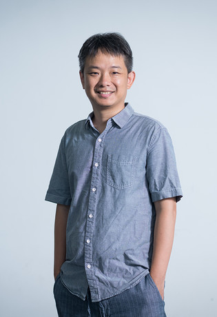

Listening through the body
Combining visual, auditory, and haptic interaction for designing a concert space for XR
RegisterAbout the workshop
A concert is never only something you hear. You feel the room, you watch the players breathe, the floor moves under the bass. When a venue is rebuilt for a headset, those channels stop arriving together unless someone designs them that way. This workshop asks how visual, auditory, and haptic interaction can be composed as one instrument rather than three layers stacked in a scene graph.
The workshop is hosted by two collaborating international research projects.
Multisensory virtual music performance
The NRF-funded project develops new forms of virtual music performance beyond the limits of remote concerts—combining VR, AR, spatial audio, and wearable haptics so performers and audiences can interact in real time across the senses—and studies through international user testing how cultural context shapes those experiences.
Embodied reconfigurability
The JST ASPIRE project pursues neuro-adaptive interfaces that combine neural sensing with AI-driven inference and control, using latent “null-space” neural activity as new channels for extending and reconfiguring the body—beyond conventional human-augmentation technologies.
Program
Morning
Afternoon
Speakers
Keynotes
What makes an experience immersive? Drawing on my practice across large-scale installations, moving image, light, sound, data, and AI, this keynote explores how visual, spatial, auditory, and bodily elements can be composed to make invisible systems emotionally and physically perceptible. Immersion, I suggest, is more than sensory spectacle: it can create spaces for attention, reflection, and renewed human agency.
Yoichi Miyawaki is a professor at the University of Electro-Communications in Tokyo, Japan. He is widely known for his early work demonstrating the reconstruction of visual images from fMRI signals. More recently, his research has explored high-speed neural information decoding using ultrafast fMRI at 7 Tesla, as well as new methods for improving the spatial and temporal resolution of human brain measurements. His research interests include understanding how visual information is represented in the brain, developing advanced neuroimaging and analysis techniques, and investigating previously unexplored dimensions of neural activity. He is also interested in extending neuroscience toward human augmentation and learning/plasticity.

In this talk, we explores the frontier of embodied interaction by presenting a suite of novel, targeted haptic interfaces designed to stimulate various parts of the human body, fundamentally enhancing user presence and immersion. We will begin with an explorative project supported by Hong Kong Environmental Protection Department for a full-body immersive Typhoon experience in VR. We then pin-point to individual body parts. Starting with the face, we introduce VirCHEW Reality, a face-worn haptic device that uses pneumatic actuation to provide kinesthetic force feedback, simulating the mechanical properties of food for virtual dining experiences. Moving to the hands, we will discuss ViboPneumo, a finger-worn vibratory-pneumatic device capable of dynamically increasing or decreasing the perceived texture roughness of physical surfaces in mixed reality. We will also dive into advanced skin-level innovations with our Skin-Integrated Multimodal Haptic Interface. Alongside it, we will present ThermOuch, a wearable thermo-haptic device that safely leverages the thermal grill illusion to induce non-harmful pain sensations, elevating arousal and realism in VR. For the lower extremities, we will introduce PropelWalker, a calf-worn, propeller-based system equipped with ducted fans that simulates buoyancy and fluid resistance, allowing users to physically feel the weight of walking through water, mud, or sand. Collectively, these projects demonstrate how geographically targeted, multimodal haptic technologies—spanning from facial kinetics to leg-based force feedback—can profoundly elevate body ownership, sensory realism, and engagement in virtual worlds.
Talks
Venue
Maebong Station, Seoul Subway Line 3. Leave by Exit 4 and walk about five minutes.
Register
Participation is free for everyone. Registration closes when the workshop reaches capacity.
Register on Google Form